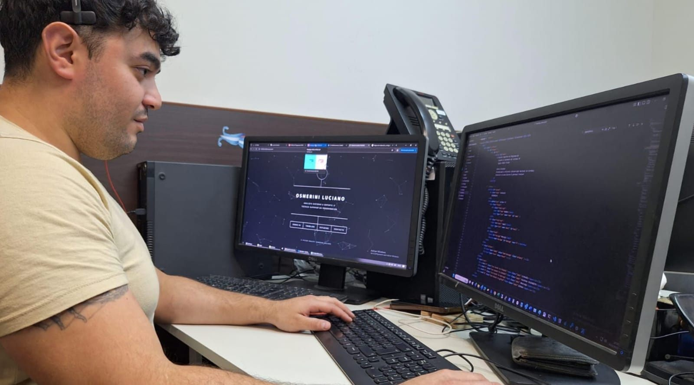
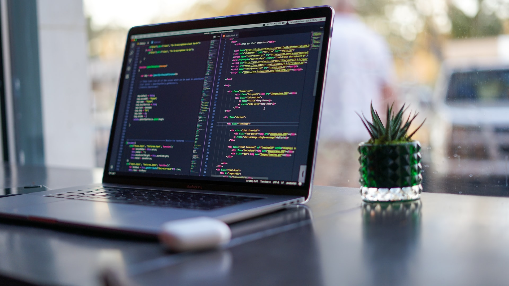

Sobre Mi
Soy profesional en Tecnologías de la Información, apasionado por sus diversas áreas. Desde temprana edad, me familiaricé con computadoras y sistemas, lo que me permitió adquirir una amplia experiencia en administración de sistemas, soporte técnico y desarrollo.
Estoy especializado en la resolución de incidencias IT y automatización de procesos, habilidades que me permiten identificar y resolver problemas técnicos de manera eficaz, brindando soporte a usuarios finales. Poseo conocimientos en redes, seguridad informática, bases de datos y herramientas de gestión IT.
Destaco por mi capacidad para trabajar en equipo y mi responsabilidad al mejorar sistemas y procesos tecnológicos en entornos corporativos. Cuento con más de 6 años de experiencia en manejo de bases de datos y soporte técnico.
¿Interesado en trabajar conmigo?
Empleos/Cargos

Desarrollador y Soporte IT – Apex Technology (EE. UU.)
Abril 2026 – Actualidad
Desarrollo full stack y soporte técnico para una empresa norteamericana:
- Desarrollo e integración de APIs y servicios web, con trabajo de backend en Python y Node.js.
- Desarrollo frontend, mejoras de interfaz y soporte a equipos de desarrollo.
- Administración y configuración de infraestructura de red mediante soluciones Ubiquiti/UniFi, gestión de tickets y soporte técnico a través de HappyFox.
Soporte al Cliente T2 (Proyecto) – Koronet (Países Bajos)
Junio 2026 – Agosto 2026
Resolución de casos complejos de soporte al cliente en un entorno internacional:
- Resolución de casos complejos por correo electrónico, teléfono y chat.
- Investigación y pruebas de incidencias utilizando Postman, MySQL, Java, JavaScript, CSS, HTML y Windows Services.
- Colaboración con los equipos de Ingeniería y Producto para el seguimiento y la resolución de problemas.
- Trabajo en entorno macOS, con múltiples repositorios Git, proyectos de ingeniería inversa y Google Workspace.
Desarrollador – Atento S.A.
Enero 2025 – Abril 2026
Área de Transformación: Desarrollo de proyectos con Python y SQL para análisis de datos y automatización de procesos en herramientas CRM web, utilizando HTML y Bootstrap.
Proyecto destacado – Aplicación web de IT: Diseño y desarrollo de una aplicación web adaptable para automatizar tareas repetitivas de IT y administración, reduciendo en un 90% los tiempos de resolución de incidentes (de 30 a 3 minutos). Integra un chatbot que asiste a los usuarios, sugiere soluciones y agiliza el flujo de soporte, mejorando la eficiencia del equipo y la disponibilidad operativa.
Analista Técnico de Soporte IT – Atento S.A.
Septiembre 2022 – Enero 2025
- Resolución de incidentes: Resolución de incidentes de hardware y software en un entorno corporativo, incluyendo Windows, redes e impresoras.
- Administración de Active Directory: Gestión de usuarios, permisos y perfiles; utilización de herramientas de gestión de tickets como ServiceNow.
- Diagnóstico y escalamiento: Verificación de registros y diagnóstico de problemas, comunicación con áreas técnicas y usuarios internos para escalar incidentes y documentar soluciones.
Analista de Base de Datos – Atento S.A.
Noviembre 2019 – Septiembre 2022
Gestión y mantenimiento de bases de datos de gran volumen con información de clientes, trabajando con sistemas T3 y plataformas CRM internas. Apoyo en la organización y actualización de datos, y control de la precisión de los registros para mantener información confiable.
Formacion

ESTUDIOS
TECLAB Instituto Técnico Superior
♦ 2024 - 2026, Finalizado
♦ 2026 - 2026, Curso con Python, Finalizado
Empleo los siguientes lenguajes y tecnologías:
Herramientas IT
- ServiceNow - SelfService
- Active Directory - Regedit
- ConfigMGR, TeamViewer y AnyDesk
- Redes LAN/Wi-Fi y conexiones VPN
- Configuración VLANs, IP, DNS, Fortinet, RDP
- Windows y macOS
- SaaS, Google Workspace, Microsoft 365
- Paquete Microsoft Office
Lenguajes de Programación
- HTML
- CSS
- JavaScript
- Python
- SQL
Frameworks y Herramientas
- React
- Next.js
- Flask
- GitHub
- Git
- Postman
- Visual Studio Code
Nivel de Habilidades Técnicas:
HTML/CSS
Intermedio (70%)
JavaScript
Intermedio (50%)
SQL/Bases de Datos
Intermedio (50%)
Git/GitHub
Avanzado (85%)
Habilidades Profesionales:
- Experto en Hardware de sistemas PC
- Inglés: Avanzado-Fluido
- AWS: Nivel Inicial
- Prototipado UX/UI: Nivel Intermedio-Avanzado